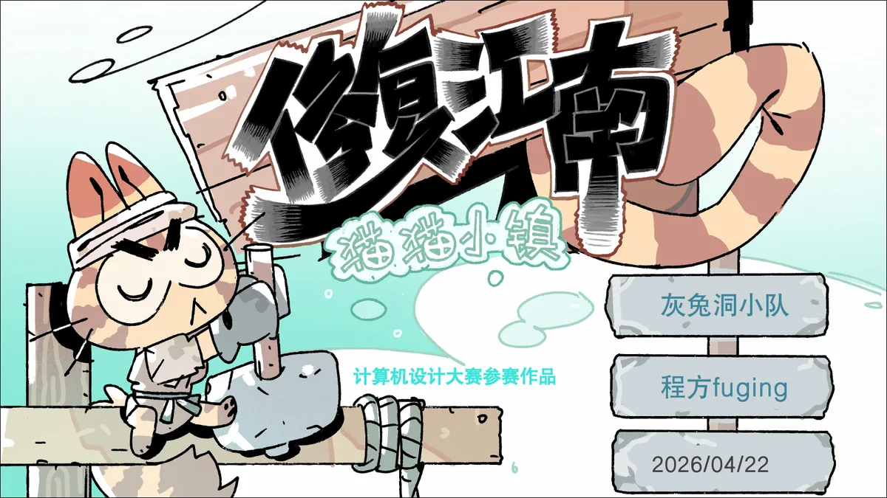

采集、合成、修复
收集材料并合成构件，把构件拖到建筑破损处，完成修缮。修复过程连接材料规划与直观的场景变化。
采集、合成并修复江南建筑，在猫猫居民的讲述中了解古建知识。

收集材料并合成构件，把构件拖到建筑破损处，完成修缮。修复过程连接材料规划与直观的场景变化。
猫猫居民在修复完成后讲述建筑知识。木门、瓦片、石桥、马头墙等内容通过具体修复任务进入游戏。
策划记录包含从村口柴房到宗祠的关卡推进，以及新手引导、建筑知识板和修复反馈；技术路线采用 Unity 2D。
点击摘页查看完整尺寸。